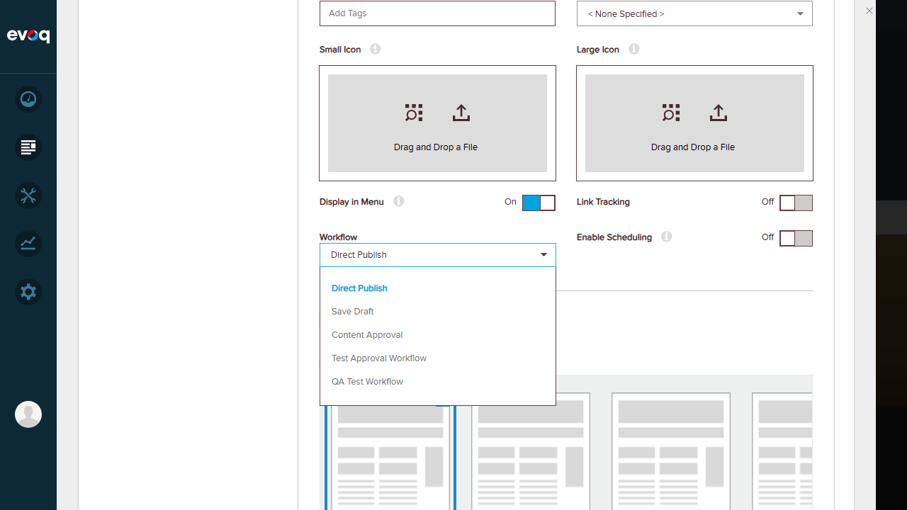
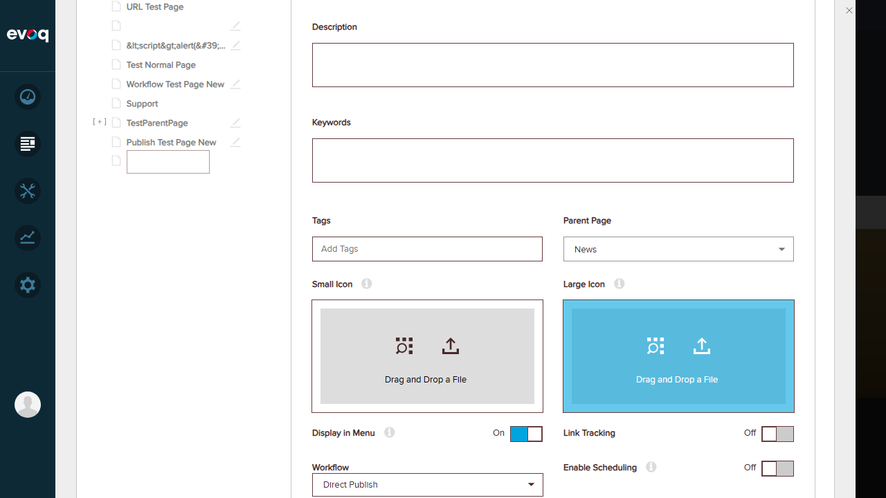
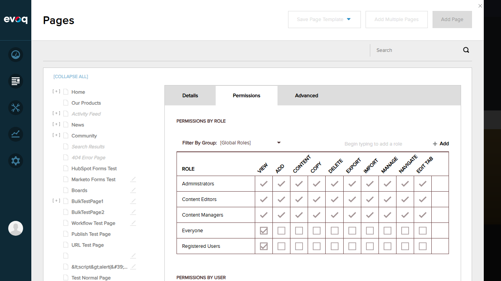

Description: Verify that default settings are returned when creating a new page without specifying a parent page.
Steps Taken:
Navigated to Admin > Content > Pages
Clicked "Add Page" button
Observed the default settings displayed for a new page with no parent
Expected Result: System returns default settings with Page Parent as "Top Page" and Page ID as 0 (new page).
Actual Result: Default settings displayed correctly:
Page Parent: Top Page
Page ID: 0 (new page)
Page Type: Standard (default)
Versioning: Off
Workflow: Off (initial state)
Test 2: Verify Default Workflow Assignment
Status:PASS
Description: Verify that the default workflow is correctly assigned when creating a new page.
Steps Taken:
From the Add Page form, clicked on the Workflow dropdown
Observed the default workflow selection and available options
Expected Result: Default workflow should be "Direct Publish" as configured in the system.
Actual Result: Workflow dropdown shows:
Direct Publish (default selected)
Save Draft
Content Approval
Test Approval Workflow
QA Test Workflow
The code in EvoqPagesControllerImpl.cs confirms: evoqPageSettings.WorkflowId = TabWorkflowSettings.Instance.GetDefaultTabWorkflowId(portalSettings.PortalId)

Test 3: Verify Default Page Type
Status:PASS
Description: Verify that the default page type is correctly set when creating a new page.
Steps Taken:
From the Add Page form, observed the Page Type selection
Verified which option was selected by default
Expected Result: Default page type should be "Standard".
Actual Result: Page Type options displayed with "Standard" selected by default:
Standard (selected by default)
Existing
URL
File
Test 4: Get Default Settings With Parent ID
Status:PASS
Description: Verify that default settings are correctly retrieved when a parent page is selected.
Steps Taken:
From the Add Page form, clicked on the Parent Page dropdown
Selected "News" as the parent page
Observed the updated settings
Expected Result: System accepts the parent page selection and maintains default settings.
Actual Result: Parent page successfully set:
Parent Page: News (selected from dropdown)
Workflow: Direct Publish (default maintained)
Display in Menu: On
Link Tracking: Off
Enable Scheduling: Off
The API GetDefaultSettings(int pageId) is called with the parent ID when a parent is specified.

Test 5: Test Default Permissions Inheritance
Status:PASS
Description: Verify that default permissions are correctly set/inherited when creating a new page.
Steps Taken:
From the Add Page form, clicked on the "Permissions" tab
Observed the default permissions by role
Expected Result: Default permissions should be displayed based on system configuration.
Actual Result: Default permissions displayed correctly:
Role
View
Add
Content
Other Permissions
Administrators
Yes
Yes
Yes
All Granted
Content Editors
Yes
Yes
Yes
All Granted
Content Managers
Yes
Yes
Yes
All Granted
Everyone
Yes
No
No
None
Registered Users
Yes
No
No
None

Observations
API Implementation: The GetDefaultSettings(int pageId = 0) method in EvoqPagesController.cs handles both scenarios - with and without parent ID.
Workflow Integration: Default workflow is retrieved from TabWorkflowSettings.Instance.GetDefaultTabWorkflowId(portalSettings.PortalId) as seen in EvoqPagesControllerImpl.cs.
Template Support: The default settings include template mode set to "Evoq Page Template" with multiple templates available for selection.
Additional Default Settings: Display in Menu defaults to "On", Link Tracking defaults to "Off", Enable Scheduling defaults to "Off".
Permissions: Default permissions follow the portal's security configuration with administrative roles having full access and public roles having view-only access.